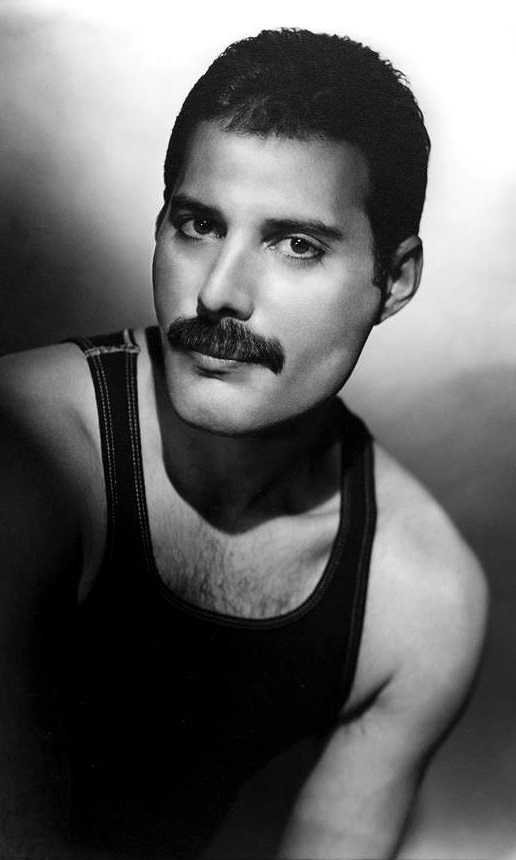
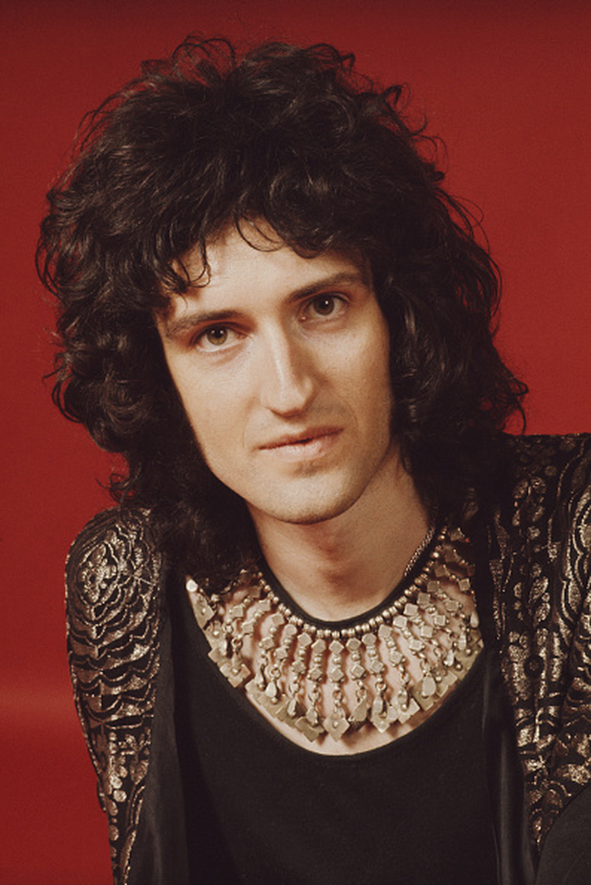
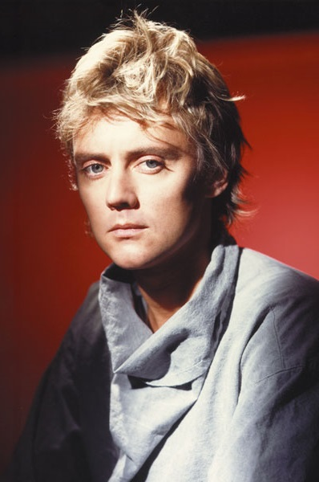
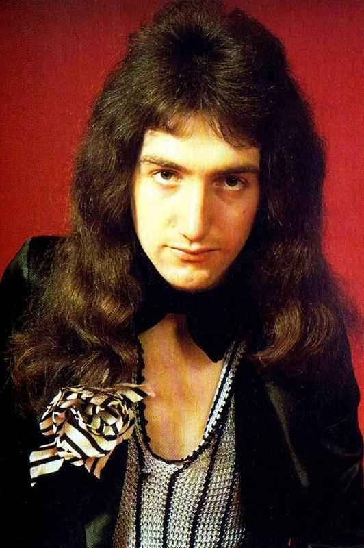
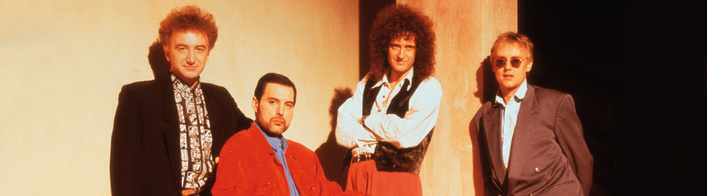

Freddie Mercury
Brian May
Roger Taylor
John Deacon

Queen은 영국의 록 밴드이다. 1970년대 중반부터 1990년까지 주로 활동하였으며, 현재까지 세계적으로 많은 팬을 보유하고 있다. 국가별 판매량 인증 합산에 따르면 퀸은 세계적으로 통산 약 9천6백만 장의 음반을 판매한 것으로 집계되었으며(역대 12위), 비공식 기록까지 합산한 추정 판매량은 1억5천만~3억 5000만장에 이른다.
퀸은 아레나 록, 글램 록, 하드 록, 헤비 메탈, 프로그레시브 록 등 다양한 장르를 시도한 그룹이기며 여러 후세 아티스트들에게 강한 영향을 미쳐 2001년에는 로큰롤 명예의 전당에, 2003년에는 최초이자 유일하게 한 명 한 명이 아닌 밴드의 단위로 작곡가 명예의 전당에 올랐으며 2004년에는 영국음악 명예의 전당, 2006년에는 VH1 채널의 록 아너스에 선정되었다.
퀸은 세계적으로 모두 합쳐 앨범차트 18회 1위, 싱글차트 18회 1위, DVD 판매순위 10회 1위를 기록했다.

본명 '파로크 불사라'. 파로크란 이름을 사람들이 발음하기 어려워해서 프레디란 별명을 많이 썼다. 프레디는 1960년대 후반 아마추어 밴드 아이벡스(Ibex)에서 리드 보컬로 활약했는데, 후에 퀸의 앨범에 수록되는 〈Stone Cold Crazy〉와 〈Liar〉의 기본이 되는 곡을 이 시기에 작곡했다고 한다. 1970년대에 접어들어 팀 스태플(Tim Staffell), 로저 테일러, 브라이언 메이는 밴드 스마일에서 활동하여 프레디는 브라이언과 로저와 함께 퀸을 결성하였으며, 베이시스트로 존 디콘을 직접 선발하였다. 1980년대 초, 퀸 활동을 잠시 쉬며 프로듀서 리처드 울프(Richard Wolf)의 작업에 참여하고 영화 《메트로폴리스》의 재개봉 사운드트랙 작업에도 참여하는 등 활동의 폭을 넓혔다. 1985년에는 솔로앨범 《Mr. Bad Guy》를 발매하였고, 영국 음반 차트 6위에 올랐다. 싱글발매된 〈I Was Born to Love You〉는 특히 큰 인기를 끌었다. 1990년 퀸과 함께 그들의 마지막 앨범이 되어버린《Innuendo》레코딩을 시작한 후 공적인 자리에서 사라진 듯 했던 그는 1991년 11월 자신이 에이즈 투병중이라는 사실을 언론에 공개하였고, 에이즈와의 투쟁에 동참해 줄 것을 호소한지 하루 뒤인 11월 24일 자신의 집에서 에이즈등의 합병증으로 45세 나이에 숨을 거두었다.
임페리얼 칼리지 런던에 진학하여 천체물리학자를 꿈꾸던 그는 퀸에 합류한 시점에서 이미 박사 과정을 밟던 중이었다. 그러나 밴드가 성공 가도를 달리며 학업을 잠시 중단하고 밴드활동에 전념하게 된다. 밴드의 보컬리스트인 프레디 머큐리가 불세출의 보컬 능력과 무대 장악력을 지녔기에 가려지긴 했지만, 그의 기타 연주 실력은 세계에서도 손꼽힐 정도이다. 2005년 영국의 라디오 방송국인 '플래닛 락'이 실시한 투표에서 역대 가장 위대한 기타리스트 7위에, 롤링 스톤지의 역대 가장 위대한 기타리스트 100명 중 39위에 올랐다. 어린 시절, 기타를 살 돈이 마땅치 않아서 전자기사인 아버지와 함께 제작한 수제 기타 "레드 스페셜"을 가지고 40년이 지난 지금도 녹음과 연주할 시에 메인 악기로 사용하고 있다. 때문에 그의 기타 톤은 흉내내기 어렵다. 연주할 때는 피크 대신 6펜스 동전을 사용하는데, 동전이 딱딱하기 때문에 컨트롤하며 연주하기가 편하기 때문이라고 한다. 브라이언 메이의 테크니션인 피트 맬런드론(Pete Malandrone)의 말에 인터뷰를 보면 동전으로 연주를 하기 때문에 브라이언 메이의 기타에는 늘 금속 가루가 묻어있고, 픽업은 깎여나간 것들이 많기 때문에 정기적으로 자주 관리를 해줘야한다고 한다.
각종 타악기, 백킹보컬, 욕 그리고 비주얼 담당. 데뷔 초기에 퀸이 평론가들에 의해 한창 까일 때, "퀸은 배우 뺨치게 잘생긴 드러머(로저) 빼고는 볼 것이 없다."라는 평이 있었다. 그눈 Beat Unlimited와 The Reactions 등의 지역 밴드에서 드러머로 활동하였고, 이후 런던의 대학으로 진학하면서 드러머를 구하고 있던 브라이언 메이의 밴드 "Smile"의 오디션을 보게 된다. 이때 드러머를 구한다는 포스터를 보고 로저가 먼저 연락을 했는데, 브라이언은 자신이 원하는 드럼 스타일을 편지에 아주 장황하게 적어서 로저에게 부쳤다고 한다. 프레디 머큐리는 파격적인 이미지를 위해 팀 이름을 "Queen"으로 정했다. 1981년과 1984년에 두 차례 솔로앨범을 냈고, 1987년 프레디 머큐리의 건강 이상으로 순회공연을 할 수 없게 되자 퀸 멤버들의 동의를 얻어, 드러머가 아닌 리드 보컬로서 밴드 '더 크로스'를 조직한다. 프레디 머큐리 사망 이후 존 디콘이 은퇴하고 브라이언 메이와 함께 두 명이서 활동하고 있으며 지금도 투어를 돌고 있다. 아직도 매우 잘생겼다.
존 디콘은 어릴 적부터 음악에도 관심이 많았지만 기계 만지는 것에도 관심이 많았다고 한다. 어릴 적부터 밴드 활동을 하였지만 같이 하던 밴드 단원들이 다른 곳에 스카웃 되기 시작하며 공부에 전념하여 런던 대학교를 가게 되었다. 대학교에 다니던 존은 다시 밴드 활동을 하기로 마음먹었고 자신이 직접 멤버를 모집해 밴드를 만들었지만 딱 한번 공연하고 밴드는 해체했다. 존은 어쨌든 음악 활동을 계속하기로 마음먹었고 이리저리 오디션을 보러 다니던 와중 친구의 소개로 로저 테일러와 브라이언 메이를 알게 된다. 마침 로저와 브라이언도 베이시스트를 구하던 도중이었고, 존은 다른 퀸의 다른 멤버들 앞에서 오디션을 치르게 된다. 당연히 결과는 합격. 이후 베이스주자로서, 그리고 작곡가로서 퀸의 활동에 크고작게 이바지하며 연주력으로 팬들에게 까인 일은 전혀 없고, 오히려 조용한 성격 탓에 화려한 다른 멤버들, 특히 프레디에게 묻혀서 연주력이 과소평가되었다는 평이 많다. 베이스를 백그라운드 역할을 넘어 메인 혹은 리듬 악기로 사용하곤 했으며, 대표적으로 <Another One Bites the Dust>, <Under Pressure>, <Crazy Little Thing Called Love>, <A Kind of Magic> 등의 리프가 유명하다.